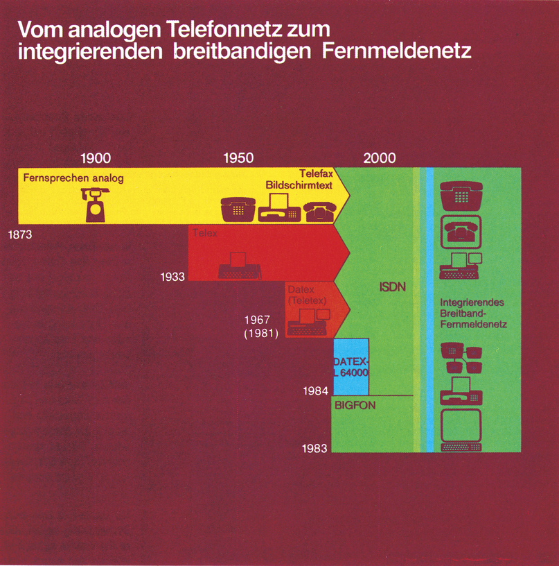
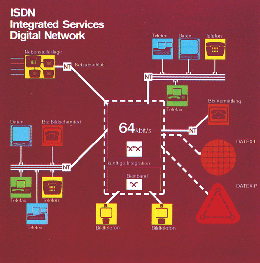

Die totale Kommunikation
Daten, Fernsehen, Hörfunk, Sprache und Text sollen in ein paar Jahren über eine einzige Leitung übertragen werden können. ISDN: Eine Vielzahl von leistungsfähigen Kommunikationsnetzen unter einem Hut.

Ein Kürzel begeistert nach und. nach immer mehr DFÜ-Fans, die es satt haben, bei Datex-P Besetztzeichen zu hören, oder die Meldung »Paritäts-Fehler« zu lesen. Beides sind Phänomene, die auf eine Überlastung der Übertragungsstrecken schließen lassen können.
ISDN (Integrated Services Digital Network) soll den entnervten Datenfernübertragern aus der Klemme helfen. Aber nicht nur diesen. ISDN soll ein sehr leistungsfähiges Breitbandnetz werden, das alle bisherigen Dienste der Post, wie Telefon, Telex, Telefax, Datex etc., in sich vereint. Anstelle einer Vielzahl von Netzen wird es dann nur noch eines geben. Auch gibt es keinen speziellen Telefon-, Telefax-, Teletext- und Btx-Anschluß, sondern nur noch einen einzigen: den ISDN-Basisanschluß. Dadurch können über eine einzige »ISDN-Nummer« alle Kommunikationsgeräte eines Teilnehmers wie Telex, Telefax, Telefon erreicht werden. Anhand einer Gerätekennung soll automatisch immer das richtige Gerät angesprochen werden.
Der Vorteil von ISDN gegenüber unserem heutigen Telefonnetz ist die digitale Arbeitsweise. Führen Sie heute ein Telefongespräch, werden Ihre Sprache oder die Töne Ihres Akustikkopplers analog übertragen, also als Schwingungen. Jedes Signal läßt jedoch bei der Übertragung sehr schnell in der Intensität, der Amplitude nach. Die Signale müssen deshalb verstärkt werden. Ist die Verbindung nun sehr lang, passieren die Signale einige Verstärkerstufen. Bei einem »normalen« Telefongespräch, fällt es kaum auf, daß es ab und zu mal in der Leitung knistert oder die Stimme des Gesprächspartners etwas verzerrt ankommt. Nicht aber beim Datentransfer.
Auch steile Signalflanken werden durch einen analogen Verstärker immer flacher. Dem menschlichen Ohr mögen diese Signalverschlechterungen nicht auffallen, wohl aber einem Computer. Aber nicht nur die analoge Verstärkung verschlechtert das Signal, sondern auch Übersprechungen aus anderen Kanälen. Sicher haben Sie beim Telefonieren auch schon jemanden anderen im Hintergrund sprechen hören, oder die Verbindung war so leise, daß Sie kaum etwas verstanden haben. Ist eine Telefonverbindung, bei der eine Vielzahl von Gesprächen über eine Leitung laufen, an der Überlastungsgrenze, kommt es zum Übersprechen, da die Übertragungskanäle dann direkt nebeneineinander liegen. Wenn nun zwei Computer sich auf benachbarten Kanälen befinden, kann man sich leicht ausmalen, was bei mangelnder Übersprechdämpfung passiert: Es erscheinen nur wirre Zeichen auf dem Bildschirm oder der Akustikkoppler »verliert« ständig den Carrier-Ton.
Trotz der aufgeführten Übertragungsmängel, sollte man das Telefonnetz nicht verteufeln, es ist immer noch eines der besten der Welt. Mit ISDN soll es aber noch wesentlich besser und vor allem leistungsfähiger werden, denn in Zukunft wird die Datennetz-Teilnehmerzahl noch stark steigen.
Was macht nun eine digitale Übertragung einer analogen so überlegen? Im digitalisierten Fernsprechnetz werden die Signale im Binär-Code übertragen, der von Computern her bekannt ist. Der Vorteil digitaler Signale liegt darin, daß sie leicht über sehr große Strecken, ohne Qualitätsverlust übertragen werden können. Der andere Grund, der für eine digitale Übertragung spricht, sind wechselnde Übertragungsgeschwindigkeiten.
Einzelne Daten können zu Paketen gesammelt werden, die dann, wie bei Datex-P, mit sehr hohen Geschwindigkeiten übertragen werden können. So sind mehr »Gespräche« pro Leitung möglich.
Wollen Sie in Zukunft jemanden über ISDN anrufen, bekommt der Post-Computer, der dann die Vermittlung anstelle der heute noch üblichen Relais in den Vermittlungsämtern übernimmt, die codierte Rufnummer übertragen und stellt die Verbindung her. Im Prinzip findet dann eine Datex-P-ähnliche Übertragung statt. Ihre Sprache wird digitalisiert, digital übertragen und schließlich wieder analogisiert, also die digitalen Impulse wieder in Sprache zurückverwandelt. Im Gegensatz zur heutigen Relaisvermittlung wird auch die Verbindung wesentlich schneller hergestellt sein. Wählen Sie einen Teilnehmer mit einem Tastentelefon an, müssen Sie nicht erst warten, bis die Relaistrommeln »durchgetickert« sind.
Zur Übertragung existieren bei ISDN zwei Nutzkanäle ä 64 Kbit/s und ein Steuerkanal für systeminterne Funktionen mit 16 Kbit/s. Das entspricht einer Gesamtübertragungsrate von 144 Kbit/s. Das ist nicht nur schnell genug für ein »normales« Telefongespräch, sondern sie erlaubt auch eine sehr schnelle Datenübertragung. Zum Vergleich: Bei Datex-P beträgt die »Höchstgeschwindigkeit« 48 Kbit/s. Wegen der sehr hohen Kosten eines solchen Anschlusses nutzt aber so gut wie niemand diese Übertragungsgeschwindigkeit. ISDN bietet da, kostengünstiger, mehr. Mit der großen Bandbreite von 144 Kbit/s können sogar mehrere Dienste gleichzeitig in Anspruch genommen werden. Während Sie mit einem Geschäftsfreund Daten austauschen, können Sie sich mit ihm. per Telefon unterhalten. Über ein- und denselben ISDN-Anschluß wohlgemerkt.
ISDN - Konkret

ISDN soll ab 1988 zu einem universellen Durchschaltenetz ausgebaut werden, das den Teilnehmern sowohl Sprach- als auch Text-, Fest-bild- und Datenkommunikation ermöglicht. Mit Hilfe einer einzigen Rufnummer wird eine Verbindung hergestellt, wobei der Anrufer die Kommunikationsart wählen kann: Entweder Sprachkommunikation (Telefon) oder Text-/Daten-Kommuni-kation (Telex, Btx, Telefax).
Der Grundstein für ISDN wurde vom CCITT (Comite Consultatif International Te-legraphique et Telephoni-que) gelegt. Ende 1983 wurde ein Pilotdienst der British Telecom, genannt IDA (Integrated Digital Access), ein-geführt. IDA stellte dem Teilnehmer einen 64 Kbit/s, einen 8 Kbit/s Kanal für Daten und einen 8 Kbit/s Signalisierungskanal zu Verfügung. Ein System mit ähnlichem Prinzip lag für 1984 als ISDN-Einführungslösung in Japan vor, genannt INS (Information Network System). Der italienische ISDN-Pilotversuch hatte einen Teilnehmeranschluß mit einem 64 Kbit/ s-Kanal und einem 16 Kbit/s-Signalisierungskanal geplant. In den USA ist zu den analog angeschlossenen Teilnehmern auch ein digitaler Netzzugang als Alternative geplant.
Von heute auf morgen kann natürlich kein vollständiges ISDN-Netz geschaffen werden. Deshalb hat 1976 die Deutsche Bundespost als Übergangslösung das IDN (Integriertes digitales Text-und Datennetz) geschaffen. Es besteht aus einem 64 Kbit/s-Kanal, der in Verbindung mit einem Signalisierungskanal arbeitet. Über den Signalisierungskanal können verschiedene Übertragungsmodi geschalten werden. Im IDN-Verbund sind zusammengefaßt: Telex, Teletex, Datex-L und Datex-P. Für jeden Dienst im IDN gibt es allerdings einen eigenen Anschluß und Kennnummer.
ISDN — Heute und Morgen
Das normale Fernsprechnetz hat heute schon jede Menge zu leisten: Außer der Sprechkommunikation muß es noch für Btx, Telefax, Mobiltelefon (Netz B und Netz C) und Datenübertragung per Koppler oder Modem herhalten. Aus diesem Grund soll es ab 1988 zum ISDN-Netzumgerüstetwerden. Parallel dazu kommt das bereits bestehende IDN, das Datex-L, Datex-P, Telex und Teletex beinhaltet. Das jetzige Fernsprechnetz, das zum ISDN umgebaut werden soll und das IDN, sollen später einmal zum Breitband-ISDN-Netz zusammengeführt werden. Das Breitband-ISDN ist zusätzlich noch für Video-Konferenzen und BIGFON (Breitbandiges integriertes Glasfaser-Ortsnetz) geeignet. In Videokonferenzen steht man mit den Teilnehmern in Bild- und Sprechkontakt. Dem Anwender wird durch ISDN ein großes »Kabelsalat-Drama« erspart.
Technik des ISDN
Die beiden Nutzkanäle, auch Basis-Kanäle genannt, können mit einer Geschwindigkeit von 64 Kbit/s in Sende- und Empfangsrichtung gleichzeitg übertragen. Man kann aber auch beide Basiskanäle zu einem 128 Kbit/s-Kanal zusammenschalten. Für beide Basiskanäle wird über den Signalisierungskanal die Teilnehmerkennung übertragen.
Die Teilnehmersignalisierung umfaßt die Übermittlung allgemeiner Informationen zwischen dem Teilnehmer und dem Netz. Das sind beispielsweise Daten über vorliegende und nicht erledigte Verbindungswünsche, Gebührenhinweise etc., sowie dienstspezifische Informationen zur Regelung der Verbindungen auf den Basiskanälen und zu verschiedenen Endgerätekonfigurationen.
Werden für größere Nebenstellenanlagen mehr Basis-Kanäle gebraucht, kann eine Multiplexkanal-Struktur mit bis zu 30 Basiskanälen und einem Signalisierungskanal aufgebautwerden. Auf dem Signalisierungskanal werden die Daten dann mit 64 Kbit/s übertragen.
Was kommt noch?
In Ergänzung des Schmal-band-ISDN und seinen Diensten sollen im Breitband-ISDN Dienste mit schneller Standbild- mit höherer Auflösung, sowie die Bewegtbild-Kommunikation angeboten werden. Zu diesen Breitbanddiensten zählen dann Bildfernsprechen und die schon erwähnte Bildfernsprechkonferenz, mit Übertragungsgeschwindigkeiten von 2 bis 140 Mbit/s. Diese Kommunikationsformen umfassen dann gleichzeitige Bild- und Sprachübertragung zwischen zwei oder mehreren Teilnehmern in beide Kommunikationsrichtungen.
Das normale Fernsprechnetz wird auch nach der Einführung von ISDN für eine längere Übergangszeit erhalten bleiben. Vorhandene Endgeräte und Anschlüsse des alten Fernsprechdienstes müssen dadurch nicht von heute auf morgen geändert werden. Alle bis jetzt bekannten nichtsprachlichen Fernmeldedienste, wie Datex-P, sollen weiterhin unverändert angeboten werden. Sie werden aber auch über den ISDN-Anschluß erreichbar sein. Das sieht so aus, daß analoge Modemsignale digitalisiert, übertragen und wieder analogisiert werden. Der Vorteil liegt darin, daß alle Leistungsmerkmale des ISDN mitbenutzt werden können.
Abschließend kann festgestellt werden, daß ISDN für jeden ein sehr leistungsfähiges und bequemes Kommunikationsnetz darstellt. Man kann hoffen, daß das ISDN- Netz bald, zumindest bundesweit, eingeführt wird, vorausgesetzt die Kosten bleiben den heutigen vergleichbar.
(G. Fritzenkötter u.a./hm)